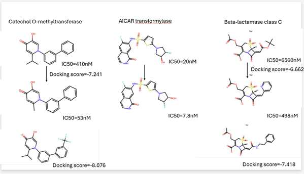
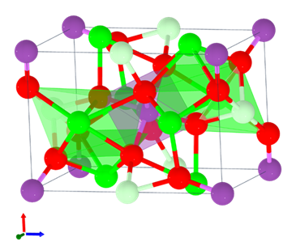

Researchers can utilize the instructions provided to interact with NatureLM.
Drug Discovery
Protein to compound
Designing small molecules based on an input protein sequence is an exciting and promising challenge in drug discovery, especially when structural information is unavailable or incomplete. NatureLM addresses this task by enabling both full molecule generation and molecular fragment generation, using the protein target sequence as input. This process, known as "sequence-to-compound," aims to directly design potential drug candidates by leveraging the protein's amino acid sequence to generate molecules with strong binding affinity and favorable properties.
Scenario 1: Complete moleclue generation
Instruction: Produce a compound guided by the target <protein>LALSLTADQMVSALL...SYDLLLEMLDAH</protein>
Response: <mol>CC1=C(c2cccc(O)c2)C(c2ccc(I)cc2)Oc2ccc(O)cc21</mol>
Scenario 2: Fragment generation
Instruction: Design a compound with reference to the target <protein>DTKEQRILR...EKAIYQGP</protein> and the fragment <fragA>O=c1[nH]cnc2c(O)cc([*:1])c([*:2])c12</fragA>
Response: <fragB>Fc1ccc([*:1])cc1.Fc1ccc([*:2])cc1</fragB>
We evaluated NatureLM on a held-out test set by generating an equal number of small-molecule ligands for each protein target. The generated compounds were assessed using docking score (estimate the binding affinity) and Synthetic Accessibility Score (SAS, estimate how difficult it is to synthesize the generated compound)
From the full-compound generation results, we observed that NatureLM outperforms previous classification-based methods in generating compounds with better docking scores. Additionally, larger versions of NatureLM consistently produce compounds with improved binding affinity, as reflected in the docking scores. The synthetic accessibility score of NatureLM-generated compounds is generally favorable, demonstrating its ability to balance potency and synthesizability.
| Vina | SA | |
|---|---|---|
| TargetDiff | -6.08 | 0.67 |
| TamGen | -6.66 | 0.76 |
| NatureLM (1B) | -6.8 | 0.82 |
| NatureLM (8B) | -6.92 | 0.81 |
| NatureLM (8x7B) | -6.95 | 0.82 |
For molecular fragment generation, we selected three PDB files published after May 2024 to ensure they were not included in our training data. Using the target sequence and the fragment we aimed to retain, we generated molecular fragments. The results, demonstrated in Figure XXX, show that larger versions of NatureLM consistently yield better outcomes.

Moving forward, we aim to expand our evaluation to include more diverse protein sequences and additional metrics beyond docking and SAS scores. This will help validate the broader applicability of "sequence-to-compound" drug discovery and refine NatureLM's ability to generate drug-like molecules with real-world potential.
Text-Driven Generation and Optimization
NatureLM allows scientists to interact with AI effortlessly by describing their objectives in natural language. It can generate and optimize specified scientific entities. This capability accelerates iteration cycles and empowers researchers to focus on tackling critical scientific challenges.
Scenario 1: Text-based compound affinity optimization
Optimizing the binding affinity of a drug compound is a critical step in drug discovery, as it directly impacts the effectiveness and specificity of the compound for its biological target. Higher binding affinity often translates to improved efficacy and lower required dosages, which can reduce potential side effects. This process, however, is traditionally resource-intensive and time-consuming.
With NatureLM, researchers can streamline this process by interacting with the model using natural language. For example:
Instruction: Improve the binding affinity of <mol>CC(C)c1cc(=O)c(O)cn1-c1cccc(-c2ccccc2)c1smiles1</mol> on Catechol O-methyltransferase.
Response:

NatureLM recommends the SMILES representations of candidate compounds with potentially improved binding affinity. Users can specify the desired number of candidates for generation and further evaluate them using methods such as docking, Free Energy Perturbation (FEP), Structure-Activity Relationship (SAR) analysis, or expert review. In two demonstrated cases, NatureLM successfully identified compounds that aligned with previously validated results from wet-lab experiments, highlighting its potential to propose viable candidates. Additionally, NatureLM can design entirely new compounds with superior docking scores, with further findings currently awaiting experimental validation.

Protein Design
We leverage NatureLM to design proteins. Example instructions include:
- I require a stable protein sequence, kindly generate one.
- Generate a soluble protein sequence.
- Produce a protein sequence that is not soluble.
Additionally, we utilize SFM-Protein to train a predictor that determines whether an input protein is stable. The success rates for the 1B, 8B, and 8x7B models are 64.4%, 65.7%, and 81.2%, respectively. These results demonstrate that larger models can lead to better performance.
A notable application of text-based protein design is creating proteins that can bind to heme, an essential cofactor with critical roles in oxygen transport, electron transfer, and enzymatic activity. By using natural language instructions, we aim to generate novel protein sequences capable of binding to the heme molecule while exploring diverse structural strategies.
The input command is that:
Generate a protein that binds to heme.
After generation, we use NatureLM's protein-to-description function to annotate the generated sequences. Only the sequences containing keywords related to heme are retained for further analysis. Subsequently, we employ Phoenix to predict the complex structure of the generated protein with the heme group. Following this, we evaluate the remaining candidate proteins.
Among the generated proteins, we identify a promising candidate with a sequence similarity of 0.55 to the NR database. Interestingly, while the sequence exhibits moderate similarity, the predicted structure closely resembles existing proteins. Notably, two histidine residues are positioned near the central iron atom of the heme group, facilitating coordinated bonding and potential functional activity.

Material Design
NatureLM enables researchers to generate materials with specified properties by using natural language instructions. This text-to-material approach is particularly promising as it streamlines the discovery process, allowing researchers to explore vast design spaces more efficiently than traditional trial-and-error methods. Below, we present two examples that demonstrate its capabilities in material composition and property
Example 1: Generating a Material with Specified Elements
In the first example, we prompt NatureLM to draft a material that includes specific elements.
Instruction: Draft a material that includes Sr, Nd, Bi, O.
Response: <material> Sr Sr Sr Sr Nd Nd Bi Bi O O O O O O O O O O O O <sg14> </material>
This output specifies both the composition of the material (4 Sr, 2 Nd, 2 Bi, and 12 O per unit cell) and its space group (14 for this example). To further enhance its capabilities, we fine-tuned the 1B version of NatureLM, transforming it into a material structure generator referred to as NatureLM-Mat3D. NatureLM-Mat3D takes the composition and space group as input and autoregressively outputs the lattice parameters, followed by the atomic coordinates within that lattice.
Using MatterSim to evaluate the properties of the generated structure, we found that its energy above hull (e_hull) is 0.00, confirming that it is a stable material.
Example 2: Generating a Material with a Specified Bulk Modulus
Materials with an ultra-high bulk modulus are highly valued for their exceptional stiffness and incompressibility, making them critical for applications in extreme environments, industrial tools, and advanced engineering. To test NatureLM's ability to generate such materials, we tasked it with designing a material with a desired bulk modulus of 400 GPa, a value comparable to the stiffness of diamond:
Instruction: Provide the composition for a material designed to have a desired bulk modulus of 400 GPa.
Similar to the evaluation pipeline used in the first user application, we begin by using NatureLM-Mat3D to predict the 3D atomic structure of the material. We then employ MatterSim to estimate the e_hull and bulk modulus, followed by a manual assessment of the structural feasibility. Next, for materials with low e_hull values and a bulk modulus close to 400 GPa, we perform Density Functional Theory (DFT) calculations to obtain more accurate bulk modulus values. Using this filtering approach, we apply DFT to evaluate the following three cases
<material> Ir Os Os Os Os Os <sg155> </material>
<material> Os Os Os Re <sg187> </material>
<material> Re Re Re C <sg187> </material>
And their results are:

The DFT calculations computationally confirm that the above three materials above possess high bulk modulus values. [如果喜欢，material expert可讲讲这几个材料和之前不一样的地方] These findings highlight the potential of NatureLM to generate computationally viable materials suitable for advanced applications.
While NatureLM demonstrates significant potential in generating material compositions and predicting properties, its space group predictions are not always accurate, which can impact the precision of the resulting 3D structures and property evaluations. Despite this limitation, the method remains highly valuable as it drastically reduces the time and computational cost associated with exploring and identifying new material compositions.
RNA Design
Guide RNA (gRNA) is essential in CRISPR-Cas9 gene editing, directing the Cas9 nuclease to a specific genomic site. It consists of a crispr RNA (crRNA), a ~20-nucleotide sequence complementary to the target DNA, and a tracrRNA, which binds Cas9. We show that NatureLM can design crRNA that (1) is 17 to 24 nucleotides long, (2) matches a region in the given DNA, and (3) is followed by an “NGG” Protospacer Adjacent Motif (PAM). N represents a nucleotide base that could be any of the four standard bases: adenine (A), cytosine (C), guanine (G), or thymine (T). The example figure below shows the NatureLM designed guide RNA satisfies the above three criteria.

BELOW ARE OLD EXAMPLES
Generate molecule with given text compound properties (Section 3.2)
Instruction: Generate a molecule with four hydrogen bond donors.
Response: C(C[C@@H](C(=O)O)N)CN=C(N)N
One can replace `four hydrogen bonds ` to other properties like `QED 0.5`, `TPSA 90`, `three hydrogen bond donors`, etc.
Protein sequence to full molecule design (Section 3.4)
Instruction: Produce a compound guided by the target. <protein>LALSLTADQMVSALL...SYDLLLEMLDAH</protein>
Response: <mol>CC1=C(c2cccc(O)c2)C(c2ccc(I)cc2)Oc2ccc(O)cc21</mol>
Protein sequence to molecular fragment generation (Section 3.4)
Instruction: Design a compound with reference to the target <protein>DTKEQRILR….EKAIYQGP</protein> and the fragment <fragA> O=c1[nH]cnc2c(O)cc([*:1])c([*:2])c12 </fragA>.
Response: <fragB>Fc1ccc([*:1])cc1.Fc1ccc([*:2])cc1</fragB>
Here, ''[*:digit]'' refers to the connection point of the molecular fragment.
Binding affinity improvement (Section 3.5)
Instruction: Improve the binding affinity on Uridine-cytidine kinase 2 of <mol>Cc1ccc(‑c2nc3c(c(SCC(=O)Nc4ccccc4)n2)Cc2cccc(C)c2O3)cc1</mol>.
Response: <mol>Cc1ccc(‑c2nc3c(c(SCC(=O)Nc4cccc(C(=O)O)c4)n2)Cc2cccc(C)c2O3)cc1</mol>
Metabolism optimization (Section 3.6)
Instruction: Transform <mol>COCCn1c(=O)c(-c2ccccc2)nc2cnc(N3CCOCC3)nc21</mol> to yield lower CYP1A2 inhibition and present a better metabolic safety record.
Response: <mol>COc1ccc(‑c2nc3cnc(N4CCOCC4)nc3n(Cc3cccc(OC)c3)c2=O)cc1</mol>
You can replace CYP to the enzymes you wish as input.
Reaction prediction (Section 3.7)
Instruction: Please suggest possible reactants for the given product
<product>CC(=O)c1ccc2c(ccn2C(=O)OC(C)(C)C)c1</product>.
Response: <reactant>CC(=O)c1ccc2[nH]ccc2c1.CC(C)(C)OC(=O)OC(=O)OC(C)(C)C</reactant>
Protein generation (Section 4.2)
Instruction: I require a stable protein sequence, kindly generate one.
Response:<protein>GSVEVKIGTDRTTASSQDEAEERARRAGARRVRIDGNEVEVEM</protein>
Instruction: Generate a soluble protein sequence.
Response:<protein>MSLPNIFVEELVHTPIEKQVIEIVERKGIGHPDSLADGMAEAMSRELSREYIRRFGAVLHHNTDETQIVAGRSNPQFGGGEVIEPIYVLLVGRATKFFNGEYIPTDKIALKAARDYIRQHMQNLDPELDVVFNVRLGEGSTDLQDVFRRKSGNVALANDTSFGIGFAPLSETERLVFNVERRIYEEFRKKNPAIGEDVKVMGLREKDRISLTIAAAFVDRYVANIKEYDAIKEELENFVKEISSEYTEREVEVFVNTADDYETGCVYLTVTGTSAENGDDGSVGRGNRCNGLITPGRPMSMEASSGKNPINHVGKIYNLLANQIAARIAEEVEGVEEVYVRILSQIGKPINEPKALSVQVIPKSGYDISKLERPARDIAEEMIANVGKITDMVIEGKVRTFEGHHHHHH</protein>
Instruction: Produce a protein sequence that is not soluble.
Response:<protein>MAFLSQLQGGFAQLKQKAEAAAPSIADSLNQLKEAPKFMESAFKTGLNKVKLDSLGKVLNVPSLGRTQSPIDIVPVITAFGEHLQNAHFEVTYESTGEFKAVNDGNSIWLMREGNSSELAISFLPEEQYHLDAVNFHWATEPMNGSEHTIGGVGYAGEMHLIHRNTRFATMADALKQPNGVIAIAVFLNESHDDNAVFSPLINLLPQVIYKGSECKLCSFDFQTFFPVAEKTKEFWMYEGSETTDPFRETVNWIVIRAALPISSHQLDKLREVRAGRYDEEFSDKVPMKPLRPIQNPSSRTIQSSFRSVAGAPDLGFRQ</protein>
Antibody design and optimization (Section 4.3)
Instruction: Using antigen <protein>TQVCTGTDMKLR…GESSEDCQS</protein> and antibody frameworks <antibody> IVLTQTPS…LAVYYC</antibody> and <antibody>FGGGTRLEIEVQ</antibody>, create the CDR3 regions.
Response: <antibody>QQYSNYPWT</antibody>
Composition to material generation (Section 5.2)
Instruction: Build a material that has Li, Ti, Mn, Fe, O.
Response: <material> Li Li Li Li Ti Ti Ti Mn Mn Fe Fe Fe O O O O O O O O O O O O O O O O <sg8> </material>
Material generation with given bulk modulus (Section 5.3)
Instruction: Construct the composition for a material with a specified bulk modulus of 86.39 GPa.
Response: <material> Se Se Pd Sc <sg164> </material>
Design material with given bulk modulus.
Guide RNA design (Section 6.2)
Instruction: Generate a guide RNA for targeting the DNA sequence.
<dna>GACTGGCACCAG…CCCTCGC</dna>
Response: <rna>AGACACAGCGGGTGCTCTGC</rna>
Protein binding RNA design (Section 6.3)
Instructions: Given <protein>MSEY…SSGWGM</protein>, create an RNA molecule that binds to it.
Response: <rna>AAACAGG…CGTACGACA</rna>